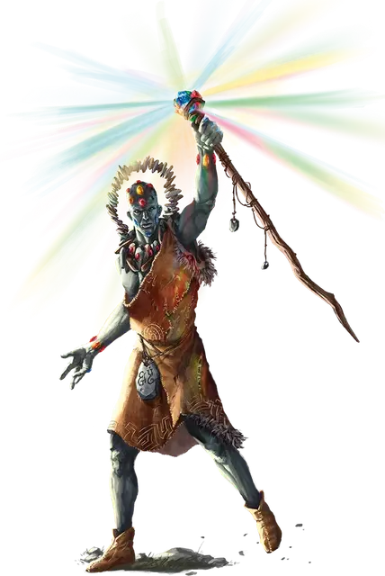

Каменный великан говорящий с камнями
Stone Giant Rockspeaker
Огромный Великан, любое мировоззрение

Класс Доспеха 19 (природный доспех)
Хиты 276 (24к12 + 120)
Скорость 40 футов
| мод | спас | ||
|---|---|---|---|
| СИЛ | 23 | +6 | +6 |
| ЛОВ | 15 | +2 | +7 |
| ТЕЛ | 20 | +5 | +10 |
| мод | спас | ||
|---|---|---|---|
| ИНТ | 19 | +4 | +9 |
| МДР | 14 | +2 | +7 |
| ХАР | 10 | +0 | +0 |
Навыки Атлетика +16, Восприятие +7, Магия +9
Чувства тёмное зрение 120 футов, пассивное Восприятие 17
Языки Общий, Великаний, Терран
Опасность 16 (15000 опыта)
Бонус мастерства +5
Особенности
Легендарное сопротивление (3/день). Если великан проваливает спасбросок, она может вместо этого сделать спасбросок успешным.
Каменная руна. У великана есть Каменная руна, начертанная на куске минерала или каком-либо другом предмете, находящемся в его распоряжении. Держа в руках или надевая предмет с руной, великан может использовать действие Радужные лучи.
Предмет, на котором нанесена руна, имеет КД 18; 30 хитов; и обладает иммунитетом к урону некротической и психической энергией, а так же урону ядом. Предмет восстанавливает все свои хиты в конце каждого хода, но обращается в пыль, если ее хиты уменьшаются до 0 или когда великан умирает. Если руна уничтожена, великан может начертать Каменную руну на предмете, находящимся в его распоряжении, после окончания короткого или продолжительного отдыха.
Действия
Мультиатака. Великан совершает три атаки Призматическим посохом.
Призматический посох. . Рукопашная атака оружием: +11 к попаданию, досягаемость 10 футов, одна цель. Попадание: 16 (3к6 + 6) дробящего урона плюс 13 (3к8) урона излучением.
Взрывающаяся жеода. Великан метает жеоду в точку находящуюся на расстоянии до 60 футов, и жеода взрывается ослепительной вспышкой. Каждое существо в сфере радиусом 20 футов с центром в этой точке должно совершить спасбросок Ловкости Сл 17. В случае провала существо получает 13 (3к8) колющего урона плюс 13 (3к8) урона излучением и становится ослеплённым до конца своего следующего хода. В случае успеха существо получает получает только половину этого урона и не ослепляется. После того, как великан бросит жеоду, совершите бросок к6; при результате "4" или ниже у великана больше не остаётся жеод для броска.
Радужные лучи (требуется Каменная руна). Каменная руна великана испускает лучи света, образующие 60-футовый конус. Каждое существо в этой области должно совершить спасбросок Ловкости Сл 17. Для каждого существа в этой области бросьте к6, чтобы определить, какой луч воздействует на него:
• 1-2: Пылающий красный. В случае провала существо получает 35 (10к6) урона излучением и становится ослеплённым до конца следующего хода великана. В случае успеха существо получает получает только половину этого урона и не ослепляется.
• 3-4: Ужасающий синий. В случае провала существо получает 35 (10к6) урона некротической энергией и становится испуганным до конца следующего хода великана. В случае успеха существо получает получает только половину этого урона и не пугается.
• 5-6: Истощающий зелёный. В случае провала существо получает 35 (10к6) урона силовым полем и становится недееспособным до конца следующего хода великана. В случае успеха существо получает получает только половину этого урона и остается дееспособным.
Описание
Каменные великаны практикуют руническую магию больше, чем иные великаны, возможно, из-за интереса этих великанов к резьбе по камню и их способностей к ней. Каменных великанов, сочетающих эту магию с потрясающим художественным мастерством, называют говорящими с камнями. Внутри своих сообществ они выступают в качестве лидеров и оракулов.
Говорящие с камнями используют кристаллы и камешки в своей одежде и вживляют их в кожу. Используя силу своих каменных рун, эти великаны могут превратить эти кристаллы в сверкающие произведения искусства. В бою говорящие с камнями могут использовать ту же магию, чтобы заставить свои кристаллы испускать ярко сияющие, интенсивные лучи света, которые могут обжигать плоть и сдерживать врагов.